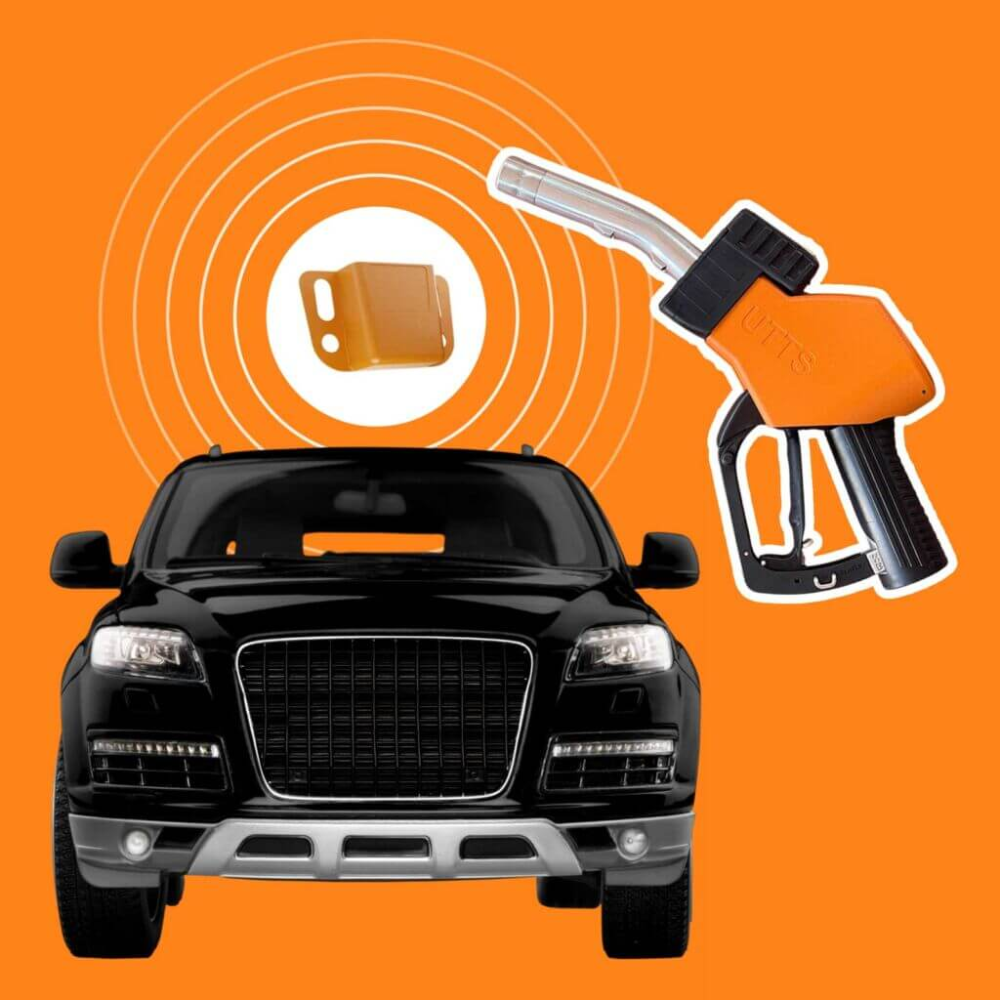
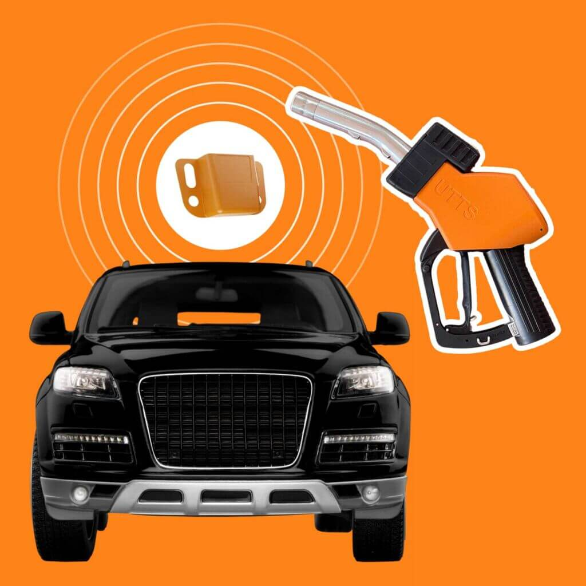

Ulusal Taşıt Tanıma Sistemi (UTTS)
Ulusal Taşıt Tanıma Sistemi (UTTS), Türkiye’deki akaryakıt sektörü için geliştirilmiş, taşıtların akaryakıt alımlarını düzenleyen ve izlenebilir hale getiren bir sistemdir. Bu sistem, taşıtların plaka bilgilerini otomatik olarak akaryakıt pompalarına bağlı ödeme kaydedici cihazlara aktarır. Bu sayede, plaka bilgileri elle girilmez ve kayıt dışı ekonomi engellenmiş olur.
UTTS, vergi mükelleflerinin akaryakıt alımlarını doğru şekilde kaydedebilmesi, mali raporlama ve vergi beyanlarının doğru yapılabilmesi için zorunludur. UTTS, ticari amaçla kullanılan, kiralama yoluyla edinilen veya işletmeye dâhil olan tüm araçlar için uygulanır.
Şahin Oto olarak, siz değerli müşterilerimize sektördeki gelişmelere uygun çözümler sunmaya devam ediyoruz. UTTS sistemiyle, akaryakıt alımlarınızın daha güvenilir, şeffaf ve doğru bir şekilde kaydedilmesini sağlıyoruz.